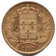
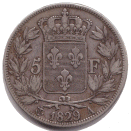
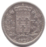
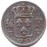
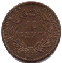
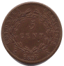

1824-1830Règne
DernierBourbon aîné
1830Révolution
FrancMaintenu
Charles X succède à son frère Louis XVIII en 1824. Son règne (1824-1830) est le dernier de la branche aînée des Bourbons. Les monnaies continuent le système du franc germinal avec l'effigie du nouveau roi.
La Révolution de Juillet 1830 met fin à son règne. Louis-Philippe d'Orléans devient roi des Français et une nouvelle imagerie monétaire apparaît.
Sources : infonumis.info · catalogues Le Franc & Gadoury
Les monnaies du règne de Charles X
'" loading="lazy" decoding="async" />
'" loading="lazy" decoding="async" />

Revers40 Francs CHARLES X
Date : 1830 A (Paris) ; 380.612 ex. (pour un total de fabrication de 454.566 ex. de 1827 à 1830)
Or 900 ‰ ; 26 mm ; 12.86g (théorique 12.90g)
Circulation : 1827-1928
Tranche en creux : (lys) DOMINE SALVUM FAC REGEM
Avers : CHARLES X ROI DE FRANCE. ; tête nue de Charles X à droite ; signé MICHAUT. séparé de la ligne du cou / T cursif au-dessous.
Revers : 40 / F de part et d'autre d'un écu de France couronné entre deux branches de laurier nouées à leur base par un ruban ; au-dessous le millésime encadré du différent et de la lettre d'atelier.
Références : F.544 G.1105
'" loading="lazy" decoding="async" />
'" loading="lazy" decoding="async" />

Revers5 Francs CHARLES X, 2e TYPE
Date : 1829 A (Paris) ; 4.826.072 ex. (pour un total de fabrication de 99.677.955 ex. de 1827 à 1830)
Argent 900 ‰ ; 37 mm ; 24.70g (théorique 25g)
Circulation : 1827-1928
Tranche en creux : (lys) DOMINE SALVUM FAC REGEM
Avers : CHARLES X ROI DE FRANCE. ; tête nue de Charles X à gauche ; au-dessous MICHAUT. sur un petit T cursif le long du listel.
Revers : 5 / F en accostement d'un écu de France sommé d'une couronne royale, contenu dans une couronne ouverte composée de deux branches de laurier nouées à leur base par un ruban ; au-dessous le millésime encadré du différent et de la lettre d'atelier.
Références : F.311 G.644
'" loading="lazy" decoding="async" />
'" loading="lazy" decoding="async" />

Revers1/2 Franc CHARLES X
Date : 1829 A (Paris) ; 537.922 ex. (pour un total de fabrication de 4.143.509 ex. de 1825 à 1830)
Argent 900 ‰ ; 18 mm ; 2.43g (théorique 2.50g)
Circulation : 1825-1868
Tranche lisse
Avers : CHARLES X ROI DE FRANCE. ; tête nue de Charles X à gauche ; au-dessous MICHAUT. T (cursif).
Revers : 1/2 / F en accostement d'un écu de France sommé d'une couronne royale, contenu dans une couronne ouverte composée de deux branches de laurier nouées à leur base par un ruban ; au-dessous le millésime encadré de la lettre d'atelier à droite et du différent à sa gauche.
Références : F.180 G.402
'" loading="lazy" decoding="async" />
'" loading="lazy" decoding="async" />

Revers1/4 Franc CHARLES X
Date : 1829 W (Lille) ; 107.832 ex. (pour un total de fabrication de 2.385.746 ex. de 1825 à 1830)
Argent 900 ‰ ; 15 mm ; 1.29g (théorique 1.25g)
Circulation : 1825-1852
Tranche lisse
Avers : CHARLES X ROI DE FRANCE. ; tête nue de Charles X à gauche ; au-dessous MICHAUT. / T (cursif).
Revers : 1/4 / F en accostement d'un écu de France sommé d'une couronne royale, au-dessus du millésime ; en bas à droite de l'écu, la lettre d'atelier, à sa gauche, le différent.
Références : F.164 G.353
'" loading="lazy" decoding="async" />
'" loading="lazy" decoding="async" />

Revers10 Cent. CHARLES X (pour les Colonies)
Date : 1829 A (Paris) ; 000 ex. (pour un total de fabrication de 00 ex. de 18xx à 18xx)
Degré de rareté : R1
Métal ; 31 mm ; 19.22g (théorique 0g**********)
Circulation : 00-00
Tranche : xxx
Avers : xx
Revers : xx
Références : Lec.307 KM#11.1
'" loading="lazy" decoding="async" />
'" loading="lazy" decoding="async" />

Revers5 Cent. CHARLES X (pour les Colonies)
Date : 1829 A (Paris) ; 000 ex. (pour un total de fabrication de 00 ex. de 18xx à 18xx)
Métal ; 26.5 mm ; 9.89g (théorique 0g**********)
Circulation : 00-00
Tranche : xxx
Avers : xx
Revers : xx
Références : Lec.301 KM#10.1